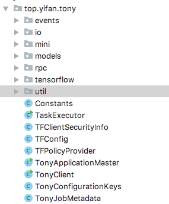
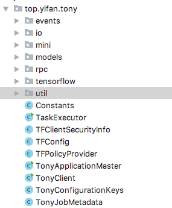
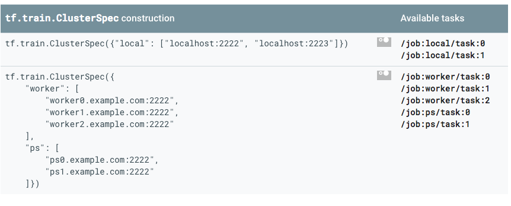
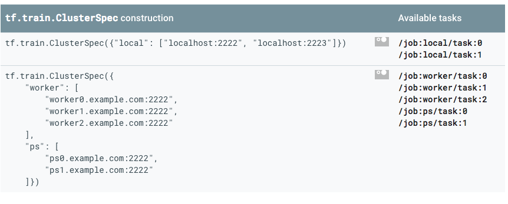

[toc]
TensorFlow On Yarn源码详解
 

首先来看代码目录构成
1
2
3
4
5
6
7
8
9
10
11
12
13
14
15
16events: eventHandler和event类，event由avro编写
io: HdfsAvroFileSplitReader 主要是读取Avro File
mini: hadoop minicluster, 主要是测试用
models: Job信息
rpc: grpc通信操作类
tensorflow: 包含一些和tf相关的操作
util: utils类包
Constants: 常量类
TaskExecutor: 运行task的executor
TFConfig: TFConfig 存TFClusterSpec
TFPolicyProvider：
TonyApplicationMaster: AMContainer运行的类，主要class
TonyClient：提交application的client
TonyConfigurationKeys: Tony的配置类
TonyJobMetadata：Tony job的元数据
源码分析
 

先感受下最原始的tensorflow分布式如何运行
TFConfig
这个类很简单就是用来表示tensorflow cluster spec的
1
2
3
4
5
6
7
8public class TFConfig {
private Map<String, List<String>> clusterSpec;
private Task task;
public static class Task {
private String type;
private int index;
Constants常量类
常量类，代码里的魔法值都在这里
TFPolicyProvider
1
2
3
4
5
6
7
8
9
10
11
12
13
14
15
16/**
* * PolicyProvider for Client to AM protocol.
* */
public class TFPolicyProvider extends PolicyProvider {
private static final Service[] TF_AM_SERVICE =
new Service[]{
new Service(
"security.tf.client-am-protocol.acl",
TensorFlowCluster.class)};
@Override
public Service[] getServices() {
return TF_AM_SERVICE;
};
}
只有一个静态方法，返回的是hadoop authorize server. 应该是client到AM的protocol
TonyConfigurationKeys
Tony的配置类
TonyJobMetadata
Tony application job的头信息
1
2
3
4
5
6
7
8
9
10/**
* meta data for job
*/
public class TonyJobMetadata {
private String id;
private String url;
private long started;
private long completed;
private String status;
private String user;
下方是三个重要类
TonyClient
用来提交tonyApp的客户端
先说类成员
1
2
3
4private YarnClient yarnClient;
private HdfsConfiguration hdfsConf = new HdfsConfiguration();
private YarnConfiguration yarnConf = new YarnConfiguration();
private Options opts;
yarnClient: 用来提交yarnApp的客户端 hdfsConf: HdfsConfiguration hdfs的配置 yarnConf: YarnConfiguration yarn的配置 opts:Options Option类，启动yarnClient的一些command option选项
1
2
3
4private String amHost;
private int amRpcPort;
private boolean amRpcServerInitialized = false;
private ApplicationRpcClient amRpcClient;
amHost: am所在的host地址 amRpcPort: am监听的端口 amRpcServerInitialized: 判断amRpc是否已经初始化 ApplicationRpcClient: App用grpc通信的客户端
1
2
3
4
5
6
7
8
9
10
11
12
13
14
15
16// Containers set up.
private String hdfsConfAddress = null; hdfsConf的地址
private String yarnConfAddress = null; yarnConf的地址
private long amMemory; am的Memory
private int amVCores; am的cpu cores
private int amGpus; am需要gpu???
private String taskParams = null; task的一些参数
private String pythonBinaryPath = null; python的binary path
private String pythonVenv = null; python的virtual env
private String srcDir = null; source目录，应该是依赖jar包地址
private String hdfsClasspath = null; hdfs的类路径
private String executes; 执行类的位置
private long appTimeout; app的TimeOut
private boolean secureMode; 是否要secureMode
private Map<String, String> shellEnv = new HashMap<>(); 环境变量
private Map<String, String> containerEnv = new HashMap<>(); container所需的环境变量
1
2
3
4
5
6private String tonyFinalConfPath;
private Configuration tonyConf;
private final long clientStartTime = System.currentTimeMillis();
private Path appResourcesPath;
private int hbInterval;
private int maxHbMisses;
tonyFinalConfPath: 这个设计绝对有问题，后续参考xlearn来改改，这什么鬼 tonyConf: Tony的configuration clientStartTime: client提交开始时间 appResourcesPath: 运行这个app所需的资源路径 类似spark的 --jars hbInterval: 心跳检测 maxHbMisses: 最多心跳检测miss次数
1
private Set<TaskUrl> taskUrls = new HashSet<>(); 任务的urls
constructor
1
2
3
4public TonyClient(Configuration conf) {
initOptions();
tonyConf = conf;
}
类构建没什么特别，会有一个command option的加载
1
2
3
4
5
6
7private void initOptions() {
opts = Utils.getCommonOptions();
opts.addOption("conf", true, "User specified configuration, as key=val pairs");
opts.addOption("conf_file", true, "Name of user specified conf file, on the classpath");
opts.addOption("src_dir", true, "Name of directory of source files.");
opts.addOption("help", false, "Print usage");
}
methods
先来看看所有方法


多且乱 后续肯定要优化，至少也要接口化，这个肯定不能直接用
run
入参 null 返回 boolean
1
2
3yarnClient.start();
YarnClientApplication app = yarnClient.createApplication();
GetNewApplicationResponse appResponse = app.getNewApplicationResponse();
老三样，几乎所有的yarnAppClient开始都是如此 第一步： start yarnClient 第二步： 创建app 第三步： app拿到response
这三步就是向resource manager拿到一些基本信息用的。
后续都会接一个资源验证，如：
1
2
3
4
5
6
7
8
9
10
11// Truncate resource request to cluster's max resource capability.
if (amMemory > maxMem) {
LOG.warn("Truncating requested AM memory: " + amMemory + " to cluster's max: " + maxMem);
amMemory = maxMem;
}
int maxVCores = appResponse.getMaximumResourceCapability().getVirtualCores();
if (amVCores > maxVCores) {
LOG.warn("Truncating requested AM vcores: " + amVCores + " to cluster's max: " + maxVCores);
amVCores = maxVCores;
}
appResponse会拿到两个信息 memory和Vcores，这里没有拿到gpu,yarn对gpu的隔离应该只是在io层面，后续再看
下一步一般都是先拿到hdfs的操作类FileSystem
1
2
3FileSystem fs = FileSystem.get(hdfsConf);
ApplicationSubmissionContext appContext = app.getApplicationSubmissionContext();
ApplicationId appId = appContext.getApplicationId();
这里做了三步，其实appId也可以通过appResponse来拿
1
appResourcesPath = new Path(fs.getHomeDirectory(), Constants.TONY_FOLDER + Path.SEPARATOR + appId.toString());
这个是app运行时的资源路径
1
2
3
4
5
6
7
8
9if (srcDir != null) {
if (Utils.isArchive(srcDir)) {
uploadFileAndSetConfResources(appResourcesPath, new Path(srcDir), Constants.TONY_SRC_ZIP_NAME, tonyConf, fs);
} else {
Utils.zipFolder(Paths.get(srcDir), Paths.get(Constants.TONY_SRC_ZIP_NAME));
uploadFileAndSetConfResources(appResourcesPath, new Path(Constants.TONY_SRC_ZIP_NAME),
Constants.TONY_SRC_ZIP_NAME, tonyConf, fs);
}
}
我们知道srcDir是运行app所需的jar包本地位置，这一步是把依赖的jars压缩下然后上传到appResourcesPath路径下
1
2
3
4
5
6
7
8
9
10
11
12if (pythonVenv != null) {
uploadFileAndSetConfResources(appResourcesPath, new Path(pythonVenv), Constants.PYTHON_VENV_ZIP, tonyConf, fs);
}
if (yarnConfAddress != null) {
uploadFileAndSetConfResources(appResourcesPath, new Path(yarnConfAddress),
Constants.YARN_SITE_CONF, tonyConf, fs);
}
if (hdfsConfAddress != null) {
uploadFileAndSetConfResources(appResourcesPath, new Path(hdfsConfAddress),
Constants.HDFS_SITE_CONF, tonyConf, fs);
}
同理对yarnConf， hdfsConf还有pythonVenv也上传到appResourcePath. 这样app运行python文件就有了所有的依赖 这个实现很不错
1
2
3
4
5
6
7this.tonyFinalConfPath = Utils.getClientResourcesPath(appId.toString(), Constants.TONY_FINAL_XML);
// Write user's overridden conf to an xml to be localized.
try (OutputStream os = new FileOutputStream(this.tonyFinalConfPath)) {
tonyConf.writeXml(os);
} catch (IOException e) {
throw new RuntimeException("Failed to create " + this.tonyFinalConfPath + " conf file. Exiting.", e);
}
这个是把最终的xml文件全部保存到本地，用来查看container启动的环境吗？
1
2
3
4String appName = tonyConf.get(TonyConfigurationKeys.APPLICATION_NAME,
TonyConfigurationKeys.DEFAULT_APPLICATION_NAME);
appContext.setApplicationName(appName);
appContext.setApplicationType(APP_TYPE);
set下app名字和app的type
1
2
3
4// Set up resource type requirements
Resource capability = Resource.newInstance(amMemory, amVCores);
Utils.setCapabilityGPU(capability, amGpus);
appContext.setResource(capability);
这个是set am所需的资源 分别为memory, cpu cores和 gpu资源。gpu的设置很奇怪
1
2
3
4// Set the queue to which this application is to be submitted in the RM
String yarnQueue = tonyConf.get(TonyConfigurationKeys.YARN_QUEUE_NAME,
TonyConfigurationKeys.DEFAULT_YARN_QUEUE_NAME);
appContext.setQueue(yarnQueue);
设置下提交队列
最后一步
1
2
3
4// Set the ContainerLaunchContext to describe the Container ith which the TonyApplicationMaster is launched.
ContainerLaunchContext amSpec =
createAMContainerSpec(appId, this.amMemory, this.taskParams, this.pythonBinaryPath, this.executes, getTokens());
appContext.setAMContainerSpec(amSpec);
创建ContainerLaunchContext这个类 然后setAMContainerSpec 后续会重点讲这个方法，很关键
然后提交app,
1
2
3
4
5
6
7
8
9String nodeLabel = tonyConf.get(TonyConfigurationKeys.APPLICATION_NODE_LABEL);
if (nodeLabel != null) {
appContext.setNodeLabelExpression(nodeLabel);
}
LOG.info("Submitting YARN application");
yarnClient.submitApplication(appContext);
ApplicationReport report = yarnClient.getApplicationReport(appId);
logTrackingAndRMUrls(report);
return monitorApplication(appId)
中间还有几个report相关的检测类，后面再看。
至此整个提交任务的完成，我们简单总结下 1.首先创建app然后拿到appReponse 2.资源校验 3.设置amContext 4.最后提交appContext
logTrackingAndRMUrls
log的方法
createYarnClient
1
2
3
4
5
6
7
8
9
10
11
12
13
14
15
16
17
18
19
20
21private void createYarnClient() {
if (this.yarnConfAddress != null) {
this.yarnConf.addResource(new Path(this.yarnConfAddress));
}
if (this.hdfsConfAddress != null) {
this.hdfsConf.addResource(new Path(this.hdfsConfAddress));
}
int numRMConnectRetries = tonyConf.getInt(TonyConfigurationKeys.RM_CLIENT_CONNECT_RETRY_MULTIPLIER,
TonyConfigurationKeys.DEFAULT_RM_CLIENT_CONNECT_RETRY_MULTIPLIER);
long rmMaxWaitMS = yarnConf.getLong(YarnConfiguration.RESOURCEMANAGER_CONNECT_RETRY_INTERVAL_MS,
YarnConfiguration.DEFAULT_RESOURCEMANAGER_CONNECT_RETRY_INTERVAL_MS) * numRMConnectRetries;
yarnConf.setLong(YarnConfiguration.RESOURCEMANAGER_CONNECT_MAX_WAIT_MS, rmMaxWaitMS);
if (System.getenv(Constants.HADOOP_CONF_DIR) != null) {
hdfsConf.addResource(new Path(System.getenv(Constants.HADOOP_CONF_DIR) + File.separatorChar + Constants.CORE_SITE_CONF));
yarnConf.addResource(new Path(System.getenv(Constants.HADOOP_CONF_DIR) + File.separatorChar + Constants.CORE_SITE_CONF));
hdfsConf.addResource(new Path(System.getenv(Constants.HADOOP_CONF_DIR) + File.separatorChar + Constants.HDFS_SITE_CONF));
}
yarnClient = YarnClient.createYarnClient();
yarnClient.init(yarnConf);
}
这个方法就是初始化tony的conf然后创建一个yarnClient
init
不贴代码了 也是初始化conf的一些操作，然后调用createYarnClient init+createYarnClient就是在设置运行必须的配置
initTonyConf
同上
createAMContainerSpec
这个类是我们的关注重点
首先是
1
ContainerLaunchContext amContainer = Records.newRecord(ContainerLaunchContext.class);
这是创建一个新的CLC,就是container运行需要的上下文
然后注意都需要set哪些
1
2
3
4
5
6
7
8
9
10
11
12amContainer.setApplicationACLs(acls);
String command = TonyClient.buildCommand(amMemory, taskParams, pythonBinaryPath,
executes, shellEnv, containerEnv);
LOG.info("Completed setting up Application Master command " + command);
amContainer.setCommands(ImmutableList.of(command));
if (tokens != null) {
amContainer.setTokens(tokens);
}
amContainer.setEnvironment(containerEnv);
amContainer.setLocalResources(localResources);
分别是acls 一个控制list commands:运行程序的命令 tokens: tokens setEnvironment: 运行的环境变量 setLocalResources： 运行am所依赖的本地资源
最后renturn clc
buildCommand
java command
getTokens
delegation tokens
monitorApplication
检测app的运行情况
initRpcClient
初始化rpcClient